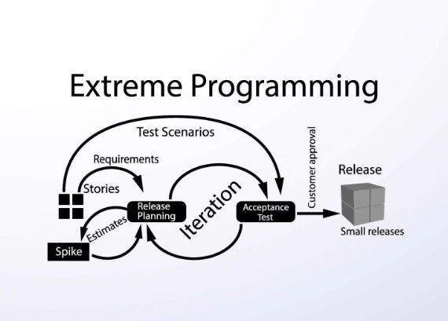
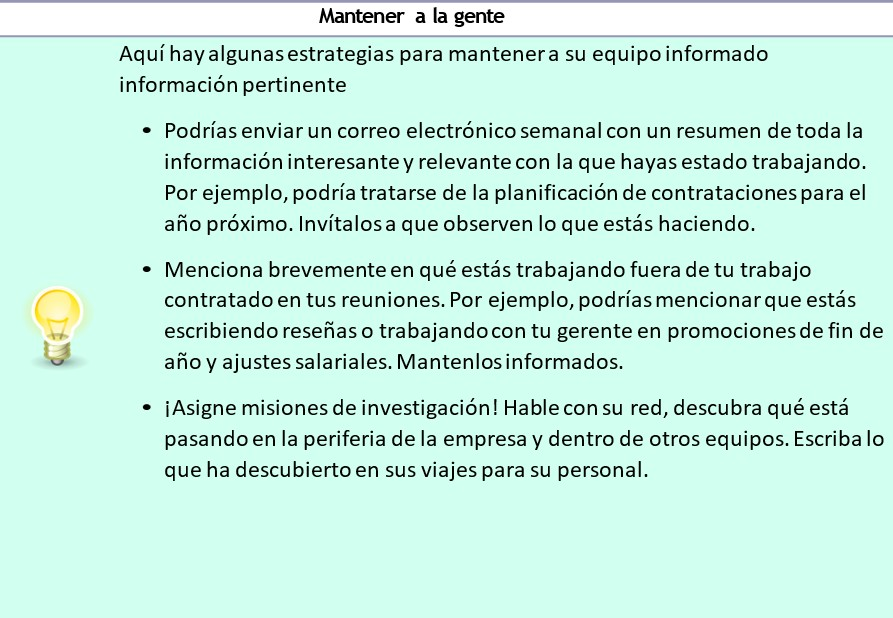
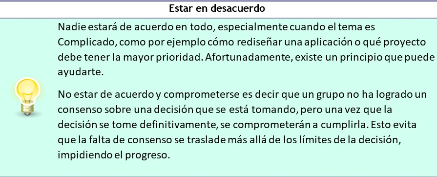

La programación extrema es una metodología ágil de gestión de proyectos que se centra en la velocidad y la simplicidad con ciclos de desarrollo cortos y con menos documentación. La estructura del proceso está determinada por 5 valores fundamentales, 5 reglas y 12 prácticas de XP
Los orígenes de XP se remontan a fines de la década de 1990, cuando Kent Beck la creó para gestionar el desarrollo de un sistema de software de nómina para Chrysler llamado Proyecto C3. El objetivo al implementar la programación extrema era (y sigue siendo) eliminar la resistencia a cambiar el código en un proyecto de desarrollo. En los métodos de desarrollo de software más tradicionales, es muy común que el código no se cambie una vez que está escrito (excepto para la depuración). Con la programación extrema, en cambio, el código se examina con tanto detalle que los desarrolladores pueden decidir modificarlo por completo luego de una sola iteración.
| Experiencias | Crecimiento | Aporte |
|---|---|---|
| Dinero ilimitado | Graduarme | Investigacion sobre alguna enfermedad intratable |
"¿Escuchaste?" Te das vuelta en tu silla. "¿Oyes qué?". Es Ben. “Acerca de nuestro maravilloso CTO”. —Eh... no lo creo. ¿Qué podría haber oído sobre ella? Ben mira hacia el suelo. “Bueno, hay un rumor circulando, pero es solo un rumor”. "¿Qué es?" “Que filtró datos de clientes a otra empresa”. “¿Qué?” “Sí. Todos los datos de nuestros clientes, incluidos sus registros de búsqueda”. “De ninguna manera. No lo puedo creer”. —Yo tampoco puedo —dice Ben. “Me siento realmente incómodo con esto”, dices. “Creo que más gente debería saberlo”, dice Ben. “Creo que hay que contárselo al equipo”.“¿Cómo sabemos siquiera que esto es verdad?” “Digamos que lo sé. Créanme”. Piensas de nuevo en lo que se dijo. Suena horrible. Seguramente la gente tiene derecho a saber si algo así ha estado sucediendo. Pero, de nuevo, ¿de qué serviría eso? Te harán las mismas preguntas. ¿De dónde salió esta información? ¿Cuándo sucedió? ¿Cómo lo sabes siquiera? Capítulo 12. La Bolsa de Valores de Información •226 ¿Es verdad? ¿Deberías confiar en Ben? Pero, ¿por qué te diría esto? ¿Qué ganaría con decírtelo? La cabeza te da vueltas. Te sientes en conflicto y confundido. “¿Estás bien? ¡Parece que has visto un fantasma!”. Es el director técnico. Sientes un escalofrío mientras todo lo que Ben compartió contigo se reproduce en tu mente. —Sí, claro. ¡Hola! Estoy bien. Estoy bien. —¿Estás segura? “¡Sí! Sí. Todo bien.” “Está bien, pensé en preguntar. Nos vemos en un rato”. “¡Sí! ¡Adiós!”. Vaya, eso estuvo cerca. Parecía bastante normal. Casi como si nada hubiera pasado. ¿Acaso sucedió algo?
Como gerente, la información es su moneda de cambio. Cuanto más sepa, mejores serán las decisiones que podrá tomar. Pero no toda la información es buena. La información puede ser chisme, rumor o mentiras maliciosas. Cuanto más tiempo pase en este puesto, más estará expuesto a ella. Este capítulo trata sobre cómo manejar adecuadamente la información: la buena, la mala y la confidencial. Explorarás lo siguiente: • Espías y guardianesAnalizaremos las diferentes motivaciones para recopilar y descubrir información y veremos cuál es la más adecuada para usted como gerente. • Cómo compartir sólo la información necesariaBasándonos en la sección anterior, analizaremos distintos tipos de información, veremos cómo categorizarlos y luego veremos cómo compartir de manera consistente solo la cantidad necesaria. • Política en el lugar de trabajoLuego, analizaremos esta frase tan común. ¿Qué significa? ¿Es buena o mala? ¿Deberías involucrarte? Espías y guardianes •227 ¿Estás listo para empezar? Trae tu gabardina, sombrero y gafas de sol. Nos reuniremos a medianoche.
Tómate un momento y piensa en un dato confidencial. ¿Qué te viene a la mente? ¿Un dossier censurado filtrado del FBI? ¿El interior del Área 51? ¿La información salarial de tus subordinados directos? Como gerente, tendrás acceso a todo tipo de información confidencial, te guste o no. En tus reuniones individuales, hablarás de temas confidenciales, tanto profesionales como personales. Además de esto, debido a tu puesto como gerente, otras personas pueden divulgarte secretos, ya que saben que pueden acudir a ti en forma confidencial. O peor aún, pueden difundir rumores para intentar ganarse su favor. Antes de profundizar en cómo compartir solo la información suficiente y cómo manejar la política en el lugar de trabajo, veamos dos conceptos relacionados con la información para obtener algunas ideas sobre cómo debe pensar acerca de la información que recopila como gerente. Empecemos con un tema muy sexy: el espionaje. Los espías molan, ¿no? James Bond escapa del tren que explota por la ventana con apenas unos segundos de ventaja, agarrando el portátil que contiene el código de lanzamiento nuclear. Ethan Hunt escala el Burj Khalifa mientras es azotado por fuertes vientos cruzados. Pero, ¿qué es en realidad el espionaje? Según Wikipedia, el espionaje es el acto de obtener información secreta o confidencial o divulgarla sin el permiso del poseedor de la información. Es una actividad de alto riesgo y alta recompensa. Aunque no te encuentres haciendo rappel en la presa Hoover ni hackeando el ordenador central de la CIA en un futuro próximo, como directivo tienes algunas similitudes con los espías, en la medida en que obtienes y manejas información sensible que es de suma importancia. Puede que no sea tan importante como los códigos nucleares. Aunque pueda parecer extraño compararnos con los espías, al hacerlo podemos destacar algunos puntos importantes: • Nunca debemos intentar obtener información sin el permiso del titular de la misma. • Nunca debemos intentar obtener información para el beneficio de otra parte. • Nunca debemos intentar obtener información utilizando medios engañosos. Pero espere, ¿no le parece todo esto completamente obvio? Bueno, sí. Tal vez lo parezca cuando lo lea. Pero ¿no resulta tentador a veces? Una vez, sin querer, me enviaron una hoja de cálculo de Finanzas que contenía la información salarial de Capítulo 12. La Bolsa de Valores de Información •228 Todos en el departamento de ingeniería, en lugar de la versión filtrada que muestra solo mis equipos. ¿Qué hice? Les dije lo que habían hecho y borré la hoja de cálculo sin abrirla. No tenía permiso para verla, a pesar de que me la habían enviado. Es posible que te encuentres en situaciones similares y tendrás que recordar que no debes ser un espía. Lo contrario también es cierto. Las personas pueden intentar extraerte información para su propio beneficio o el de los demás. Ten cuidado con las conversaciones que se mantienen en el bar después del trabajo. Ten cuidado con otras personas que pueden intentar fisgonear para averiguar varios fragmentos de información secundaria que puedan unir para inferir lo que realmente quieren saber. Simplemente sé cauteloso. Bueno, basta de negatividad. ¿Existe un modelo mejor que se pueda utilizar para entender cómo se debe operar con la información? Afortunadamente, sí lo hay. Consideremos el proceso de control de acceso en la comunicación. De forma muy similar a como un portero controlaría el acceso a la puerta de una ciudad antigua, el control de acceso es la acción de filtrar información para su posterior distribución. Por lo general, representa cómo los medios filtran la información antes de presentarla al público. Esto sucede en muchos niveles, desde los periodistas que eligen exactamente qué aspectos de las historias cubrir, hasta los sesgos específicos que pueden tener determinados medios de comunicación. Las historias pueden seleccionarse debido a su impacto, contenido, familiaridad para el público y su proximidad (piense en noticias locales versus globales). Aunque no esté al frente de un conglomerado mediático global, sí tiene acceso a la información. Usted elige cómo y cuándo difundir esa información y a quién. Como gerente, debe actuar como guardián. Tiene que: • Decidir qué información debe ser escuchada por cada parte. • Decide cuándo se debe compartir esa información. • Decide cómo debe presentarse esa información. Verás que esto se desarrolla en todo tipo de situaciones y con distintos niveles de impacto. Es posible que tengas que elegir el momento y la forma adecuados para comunicarle a alguien que vas a despedirlo. Tendrás que elegir el momento y el mensaje adecuados para informar al equipo de que su proyecto se pausará para que puedan trabajar en algo que la empresa considere más importante. Tendrás que considerar cuál es la mejor manera de manejar el mensaje de que la empresa ha tenido un año terrible y que parece probable que haya despidos. ¿Cómo deberías actuar como guardián? Ninguna situación o información es igual a otra. Por eso necesitas reglas. En la siguiente sección veremos cómo compartir la información suficiente, pero antes de profundizar en eso, hay dos reglas que debes respetar cuando se trata de lidiar con Cómo a Compartir Justo Suficiente Información • 229 todoInformación. Ambas son sencillas y ambas han existido por más tiempo que nosotros en este planeta. • El juramento hipocrático:un juramento de ética tomado históricamente por los médicos, abreviado aquí a la siguiente frase sucinta: primero, no hacer daño. • La regla de oro:una ética que es la base de varias religiones y culturas: trata a los demás como te gustaría que te trataran a ti. Al manejar cualquier tipo de información, si recuerda las reglas anteriores, casi todo saldrá bien. Pero analicemos en profundidad los matices del manejo de la información.
El 12 de febrero de 2002, el Secretario de Defensa de Estados Unidos, Donald Rumsfeld, se presentó ante periodistas y medios de comunicación en otra conferencia de prensa del Departamento de Defensa de Estados Unidos. Ante otra pregunta inquisitiva sobre la falta de pruebas que vinculen al gobierno iraquí con el suministro de armas de destrucción masiva a grupos terroristas como Al Qaeda, Rumsfeld comenzó su respuesta sin tener la menor idea de que estaba a punto de acuñar la frase con la que sería recordado. "…Porque como sabemos, hay cosas que sabemos que sabemos. También sabemos que hay cosas que no sabemos. Pero también hay cosas que no sabemos.—Los que no tenemos'No lo sabemos, no'No lo sé." Capítulo 12. La Bolsa de Valores de Información •230 Recuerdo haber visto la rueda de prensa en BBC News. Mi reacción inicial fue que Rumsfeld había dicho algo tautológico y totalmente ridículo, pero, en retrospectiva, se lo ha calificado de síntesis inteligente de cuestiones complejas. Creo que ahora estoy de acuerdo. Aunque el público declararía que esta frase es una creación de Rumsfeld,su memoria [Rum11] mencionó que se usaba comúnmente dentro de la NASA, y que Rumsfeld probablemente escuchó una variante cuando trabajó en la evaluación de amenazas de misiles balísticos a los Estados Unidos en asociación con William Graham, un administrador de la agencia espacial. En la época de la frase “lo que se sabe es lo que se sabe”, Rumsfeld se encontraba en una situación profesional difícil que puede volverse más aguda a medida que aumenta el nivel de antigüedad. En general, cuanto mayor es el nivel de antigüedad de una persona en una organización, más acceso tiene a información confidencial y más cuidadosa debe ser con la forma en que la maneja y comparte. La experiencia de una persona es lo que le permite comprender, razonar y examinar información sensible para garantizar que no se viole la confidencialidad. Es su experiencia la que le permite, cuando llega el momento de entregar información a otros, hacerlo de una manera que respete a los propietarios de la información, la información en sí y a quienes desean saber más. Por eso es una habilidad que debe aprender y practicar.
Los profesionales médicos conocen muy bien el dilema que supone compartir información sensible. Al comunicarse con sus pacientes, la confianza se establece mediante la apertura y la honestidad. Si a un paciente se le ha diagnosticado una enfermedad mortal, la entrega de esa información debe hacerse de manera transparente, sensible y amable. Esto requiere un alto grado de conocimiento y comprensión por parte del médico, tanto en términos de cómo resumir y presentar la información, pero, lo que es igualmente importante, cómo transmitirla de manera humana, con empatía y franqueza. También es importante tener en cuenta la ética, ya que el médico también debe comprender cómo manejar situaciones delicadas y complejas. Por ejemplo, consideremos que la política de accidentes en los hospitales exige que el pariente más próximo lleve a cabo la identificación inicial del fallecido. Esto puede significar que a un pariente cercano se le niegue a ver al fallecido hasta que el pariente más próximo lo haya hecho, un dilema éticamente difícil. Cómo a Compartir Justo Suficiente Información • 231 Además, ¿es incorrecto ocultar los detalles de un diagnóstico, incluso cuando no pone en peligro la vida, a alguien que padece graves problemas de salud mental y, por lo tanto, podría estar expuesto a un mayor riesgo como resultado de conocer la verdad? ¿Qué sucede si no hay una razón concreta para ocultar la información sobre un diagnóstico, pero en cambio su familia solicita que se mantenga en secreto? Quizás deberíamos estar contentos de estar en el sector del software.
Como gerente, deberá tomar decisiones periódicas sobre cuánto debe compartir con el resto del personal y cuándo. La opción más fácil con cualquier tema delicado es no decir nada en absoluto. Pero ¿mantener todo en secreto por defecto es lo correcto? Definitivamente no. A menos que exista una razón crítica para ocultar información, esta debe compartirse, aunque se debe tener cuidado con la forma en que se transmite el mensaje. Más adelante en el libro (Interactuando con humanos), exploramos los fundamentos de las relaciones que desea construir con su personal. La gestión moderna se basa en la facilitación, la empatía, la apertura y la franqueza. Algunas empresas emergentes de nuestro sector han tomado medidas radicales para lograr una cultura de apertura. Buffer publica la información sobre su personal y sus salarios para que todo el mundo la vea.1 También publica su calculadora de salarios, que calcula cuánto ganarías si trabajaras para ellos en un puesto determinado en una ubicación determinada.2 La idea es que cuando todo está a la vista, no hay nada que ocultar, por lo que la transparencia aporta coherencia y equidad. Si revisamos nuestros dilemas sobre el intercambio de información médica, esa industria cambió hace mucho tiempo su postura predeterminada hacia la apertura. En una encuesta realizada en 1961, el 10% de los médicos creía que era correcto decirle a un paciente los detalles exactos de un diagnóstico de cáncer fatal, un porcentaje que no se había estudiado.cambiado al 97% en 1979 [SFKI16]Más recientemente, el NHS está implementando ensayos de pruebas genómicas para predecir la probabilidad de sufrir una enfermedad mortal en el futuro.3 En el trabajo, en la vida y en la salud queremos transparencia, pero ¿cómo podemos lograrla respetando que no se pueden compartir todos los detalles? Como mencionamos anteriormente, a medida que aumenta el tiempo que pasa como gerente, también aumenta la exposición a información confidencial. Pero, ¿qué tipo de información confidencial? 1. https://bit.ly/2P3oJVs 2. https://buffer.com/salario 3. https://www.bbc.co.uk/news/uk-47013914 Capítulo 12. La Bolsa de Valores de Información •232 ¿De qué estamos hablando? Durante tu etapa como entrenador, recibirás parte o toda esta información. Parte de ella es información sobre el equipo y parte es información que puede significar algo que está por sucederle al equipo: • CompensaciónConocerás los datos salariales de tus subordinados directos, incluidas las inconsistencias entre ellos. Es posible que sepas que Jim está sobrepagado porque negoció bien al incorporarse, por lo que Alice está mal pagada en comparación. Debes normalizar eso con el tiempo. • Problemas de rendimientoSabrá si alguno de sus empleados tiene un rendimiento inferior al esperado.Por ejemplo, podría haber un miembro del personal en un PIP, y eso debería permanecer en secreto para el resto del equipo. • Cambios más amplios en la empresaQuizás se esté planificando una reorganización que aún no se ha concretado. Afecta a su equipo pero aún no está lista para comunicarla. • Despidos.Un mal año para la empresa puede significar que algunas personas tendrán que ser despedidas pronto. Esa lista de personal es confidencial. Se trata de un conjunto de información privilegiada y es su deber asegurarse de que se trate con el máximo respeto. En el caso de cuestiones que pueda resolver por su cuenta, esto suele estar bien. Puede guardar un secreto, ¿no? Pero se vuelve más difícil cuando necesita pedir ayuda a otros para razonar sobre la información confidencial o tomar decisiones al respecto. Debe comenzar a compartirla con otros. Pero ¿cómo sabe qué compartir, con quién y cómo debe actuar como guardián para asegurarse de seguir el juramento hipocrático y la regla de oro?
Podemos pensar en cómo compartir información confidencial tratando de clasificarla más. Tal vez podríamos clasificarla en tres categorías: • Totalmente confidencial:Aparte de aquellos a quienes se les ha dado autoridad para saberlo, nadie más debería saberlo. Por ejemplo, una ronda de despidos entraría en esta categoría. Esta información no se comparte. • Caja cerrada:Piense en ello como si fuera un regalo debajo del árbol de Navidad. Todos saben que está ahí, pero no saben qué contiene. El proceso o el concepto no son confidenciales, pero sí lo son los contenidos. Por ejemplo, las personas sabrán que se están realizando revisiones salariales, pero no conocerán el salario de los demás, ni tampoco lo sabrán las personas hasta que el proceso haya terminado. Esta información requiere que la filtre y la guarde. • Caja abierta:Esta información no es en absoluto confidencial, como por ejemplo quiénes integran cada equipo. Esta información se puede compartir ampliamente. En estas categorías se aplican las siguientes reglas: • Eres coherente en el modo en que tratas la información con diferentes personas. • Siempre compartes lo justo. Aunque estos dos principios son sencillos, es sorprendente con qué facilidad fallan, y muy rara vez por malicia. Ser consistente Luchamos contra nuestros prejuicios. Cuando se trata de compartir información, debes asegurarte de que eres consciente de lo que significa ser humano. Desde una edad temprana, los humanos tienen un deseo innato de compartir con los demás. Los bebés señalan y los niños pequeños recogen objetos para que los mires y veas lo que ellos ven. Cuando recibes información confidencial, a veces sientes este deseo inexplicable de compartirla con los demás. Es posible que te sientas obligado por muchas razones a compartir algo con alguien en el trabajo. Es posible que conozcas a alguien muy bien y sientas el deber de mantenerlo informado, incluso si no es relevante para esa persona. Incluso es posible que, inconscientemente, estés tratando de establecer una relación con alguien al revelarle un secreto. Independientemente de tu intención o relación con alguien, debes ser coherente. Solo debes compartir información con una persona si: • Es relevante para ellos y su trabajo. • Tienen una razón para saberlo. • Esto beneficia a ambos, ya que desbloquea más conversaciones. • Sólo compartes lo que necesitan saber. • Se puede confiar en que mantendrán cualquier información confidencial en secreto. De lo contrario, deberías cuestionar tus motivos para decírselo en primer lugar. Solo tú sabrás la respuesta exacta a quién se le debe decir qué y a quién no. Pero debes ser consciente de las variables que pueden afectar tus decisiones y la forma en que debes compartir esa información.
| Tu turno: compartir enigmas | Considere las siguientes situaciones. ¿Qué haría y por qué? • Ha incluido a uno de los miembros de su equipo en un PIP. Sabe que el resto de su personal se siente frustrado al trabajar con esa persona. ¿Debería decirles que ha hecho esto para demostrar que está abordando el problema? • Se avecina una ronda de despidos. Sabes que tu equipo no se verá afectado. ¿Deberías decirles con anticipación que no se preocupen? • Te enteras por otro directivo de que la empresa va a ser adquirida por Apple. ¿Deberías decírselo a alguien? ¿Cómo puedes averiguar más? • Descubres que este año el presupuesto está ahí para darles a todos en tu equipo unaAumento salarial del 20%. ¿Deberías compartir la noticia con tu compañero, que es también gerente de otro equipo? |
|---|
¿Qué significa entonces compartir lo suficiente? Es sencillo para dos de las tres categorías de información. La información completamente confidencial debería ser solo eso. La información de dominio público debería difundirse en la medida en que sea útil para el conocimiento de todos. El truco está en acertar con la categoría de caja cerrada. Mi opinión es que la existencia de información sobre cajas cerradas debería difundirse tanto como sea útil para el conocimiento de todos, salvo que no se revelen todos los detalles. Muchas personas aceptan que la información confidencial se trate de forma predeterminada, pero esto puede percibirse como algo negativo. Por ejemplo, si el proceso de revisión salarial está en marcha, ¿por qué no informar periódicamente a todos sobre su progreso, aunque no vaya a revelar los detalles hasta una fecha posterior? Guardar silencio en situaciones en las que se puede compartir la información necesaria puede hacer que el personal sienta que hay una razón para no hablar de ello. A menudo, después de los rumores y chismes, esa razón puede volverse negativa (por ejemplo, “¡no van a hacer revisiones salariales este año!”) cuando la verdadera razón puede ser bastante positiva (por ejemplo, se está gastando más tiempo y dinero en la evaluación comparativa competitiva). Cuando no hay información, la gente tiende a pensar lo peor. Por eso, trate de no permitir que falte esa información. Clasifique la información que tiene y asegúrese de compartir la cantidad justa para que el personal se sienta incluido y bien informado. Si no lo hace, sus incógnitas conocidas podrían estar vinculadas a armas de destrucción masiva, y todos sabemos cómo terminó eso.
| Tu turno: ¡clasifica esto! | Clasifique la siguiente información como completamente confidencial, de dominio público o de dominio privado para su equipo. ¿Cómo debería manejar esa información y cómo debería compartirla con su equipo, si es que lo hace? • La información salarial de cada uno de sus empleados. • El hecho de que estés planificando el presupuesto de tu equipo para el próximo año. • El hecho de que estás planificando el presupuesto de tu equipo y uno de ellos va a ser despedido. • El aumento inflacionario de los salarios en toda la empresa al final del año. • El aumento salarial porcentual acordado para los trabajadores de alto rendimiento. • En qué va a trabajar tu equipo a continuación. • Que el proyecto actual de tu equipo se va a cancelar. Ya sabes cuál es el próximo proyecto. • Que el proyecto actual de tu equipo se va a cancelar. No sabes cuál será el próximo proyecto. |
|---|
Suponiendo que estés gestionando bien la información, la tarea no termina ahí. Como gerente, también tienes el deber de mantener a la gente informada. No dejes a nadie atrás. Debes buscar constantemente la coherencia en la información que compartes: asegúrate de que todos hayan visto la misma versión de la misma información. ¿Se ha tomado una decisión importante? Resúmela en un correo electrónico. ¿Varias personas te han expresado sus inquietudes directamente? Respóndelas públicamente en un lugar donde todo el equipo pueda verlas. Asegúrate de mezclar interacciones privadas y transmisiones públicas para que nadie se quede atrás.
Hemos analizado las complejidades del manejo de la información. Sin embargo, la información que usted maneja es solo un pequeño subconjunto de toda la información que fluye en la empresa en un momento dado. Wikipedia define la palabra política como la forma en que las personas que viven en grupos toman decisiones. El desarrollo de software consiste en tomar decisiones: qué desarrollar, cómo desarrollarlo, quién debería desarrollarlo, cómo comercializarlo y venderlo, y también qué no desarrollar como resultado. Sin embargo, la palabra política en sí probablemente no te haga pensar en un politólogo que observa los comportamientos de una comunidad local. Supongo que, en cambio, piensas en campañas electorales, elecciones y partidos políticos. Estamos unidos y divididos por ideologías diferentes. Las empresas tienen sus propias ideologías y cultura internas que codifican la forma en que tratan a las personas, toman decisiones y logran resultados. El trabajo, como la vida, está lleno de muchos actores independientes en un sistema complejo. Cada actor está motivado por diferentes intereses, pasiones y valores. Cada uno trabaja independientemente en pos del bien mayor de la empresa, y la política es lo que surge de la negociación, la persuasión y el debate de ideas continuos. El término política en el lugar de trabajo se ha utilizado a menudo para describir situaciones puramente negativas, como las situaciones en las que se aprovechan de alguien, las proverbiales puñaladas por la espalda, o personas que reciben un mal trato para beneficio de otros. Yo diría que es un subconjunto de la política en el lugar de trabajo: puede suceder, y sucede, pero no es la ola que uno debería intentar aprovechar. La política se puede utilizar para el bien. En el lugar de trabajo siempre habrá conflictos políticos. No deberías optar por no involucrarte con ellos, porque si no lo haces, descubrirás que tu carrera se resiente como resultado, especialmente si pasas más tiempo en puestos de gestión. En cambio, el arte consiste en comprender los conflictos políticos en el lugar de trabajo para descubrir cómo puedes manejarlos y utilizarlos en tu beneficio mientras actúas al mismo tiempo por el bien común. El ego, el poder, las reglas no escritas y la cultura implícita se desenmascaran en los niveles superiores de una organización, y debes ser capaz de aprovecharlos con una reputación limpia y, mejor aún, utilizarlos para el beneficio de todos los demás. Profundicemos en lo que significan.
La política suele surgir debido a la tensión entre diferentes tipos de estructuras sociales: • El organigramaEste es el lugar más obvio donde puede surgir la política. Puede ser un debate entre usted y su jefe sobre sus propios intereses, o un conflicto entre usted y sus subordinados directos. También se manifiesta en individuos que se inclinan hacia abajo o hacia arriba a través del organigrama para promover sus ideas y aumentar su influencia. • Grupos informales muy unidosSiempre habrá grupos de personas que son cercanas entre sí y se protegen entre sí a través de la amistad, la camaradería o intereses compartidos. No tienen una estructura de poder formal en el organigrama, pero hacen lobby y trabajan juntos. • Personas influyentes. Las personas influyentes singulares, que pueden tener mucho más voz y voto que otros debido a su permanencia en el cargo, su celebridad o su poder de negociación, pueden hacer que las situaciones se vuelvan políticas o difíciles de manejar debido a la dificultad de crear consenso sin ellas. A medida que pase más tiempo en un puesto directivo, verá que la toma de decisiones rara vez es una tarea fácil. Debe navegar por las estructuras y las personas que acabamos de describir para asegurarse de que las cosas avancen de manera constructiva. Al igual que en la política real, todas las situaciones y negociaciones políticas implican un elemento de riesgo. ¿Cómo debe comportarse entre los distintos grupos que ejercen presión? Capítulo 12. La Bolsa de Valores de Información •238 ¿Por cosas diversas, a veces contradictorias? ¿Cómo encaja tu equipo en todo esto? Involucrarse en el tipo de política equivocado puede ser perjudicial, por lo que debe poder protegerse de los tipos de interacciones que son tóxicas y solo existen para que los involucrados sean grupúsculos, rencorosos y maliciosos. Sin embargo, hacer política correctamente fortalece su autoridad, influencia y capacidad para lograr resultados, lo que abre más puertas en su carrera gerencial.
Exploremos las formas en que deberías usar la política a tu favor. La palabra ventaja tiene mucha carga, pero lo que queremos decir es encontrar formas de aumentar positivamente tu rendimiento como gerente, asegurándote de que tu equipo esté bien conectado y expuesto a un trabajo significativo e impactante, y teniendo un efecto positivo en el resto del departamento y la empresa.
¿Quién toma las decisiones en su organización? ¿Quiénes son influyentes? ¿Quiénes son los grupos cercanos de individuos que piensan de manera similar y quiénes son las facciones rivales? Identificar esto de antemano le permitirá navegar con sensatez por el panorama político y le dará la mejor oportunidad de saber a quién recurrir para generar consenso sobre temas específicos y a quién abordar de manera diferente o incluso evitar. Tome nota de los diferentes equipos y divisiones. ¿Cuáles son sus prioridades? ¿Qué los motiva? ¿Qué les importa y de qué saben? ¿Qué personas tienen una influencia considerable y por qué? ¿Es por su experiencia en el cargo o por su destreza técnica? Al trazar un mapa de la organización y aprender cómo funciona actualmente, puede identificar con qué grupos e individuos puede colaborar en diferentes cuestiones con la menor cantidad de fricción. Una vez que hayas terminado, propónte el reto de presentarte y comenzar a construir algunas conexiones. Recuerda que para tener influencia y causar un impacto, necesitarás ganarte los corazones y las mentes. Estás conectando con las personas para conocer a tus colegas, ofrecerles tu apoyo, comprenderlos mejor y ayudarlos a hacer las cosas, y viceversa. La positividad y la amabilidad prevalecen.
A medida que las empresas crecen en tamaño, los proyectos e iniciativas avanzan gracias al esfuerzo colectivo y no solo a la fuerza de voluntad de un individuo. Cuando trabaje, deberá comprender que el consenso, al menos el máximo posible, es importante. En las empresas pequeñas y las empresas emergentes, puede simplemente tomar decisiones. tomar el toro por los cuernos y hacer lo que quiera solo con pocas repercusiones, pero las empresas más grandes son diferentes. Puedes empezar de a poco y de manera informal. Tomemos un ejemplo: si tu equipo quiere hacer algo radicalmente diferente al código base para su próximo proyecto, es importante que lleves a la mayor cantidad posible de personas a la vez. Es probable que tu equipo no sea el primero que haya pensado en hacer algo como lo que propones, así que empieza por tener algunas conversaciones informales con personas de alto nivel, influyentes y cercanas a los asuntos en cuestión. Suponiendo que las conversaciones informales hayan tenido éxito, entonces puedes anunciar más ampliamente que te gustaría probar una solicitud de extracción de prueba de concepto, o incluso simplemente escribir un artículo de ideas para su distribución. Es importante que aquellos con quienes hablaste inicialmente puedan patrocinar tus esfuerzos y ofrecer su apoyo, y que cualquier trabajo que propongas sea solo eso: una propuesta. Crea consenso haciendo que los demás sientan que siempre tienen la oportunidad de contribuir a lo que estás sugiriendo en lugar de que parezca un mandato. Esto desbloqueará la capacidad de tomar decisiones de mayor alcance.
Las apariencias y las interacciones son importantes. Debes ser tú mismo de manera constante para asegurarte de que puedes relacionarte bien con los demás y representar a tus equipos de manera correcta y respetuosa. No pretendas ser alguien que no eres. No actúes como si fueras alguien que no eres para intentar impresionar. Simplemente sé tú mismo. Eso es más que suficiente. Eres genial. Sea siempre abierto, transparente, respetuoso y crítico y tenga clara su postura. Tenga la confianza de estar abierto a que le demuestren que está equivocado y de aceptarlo si así es. Esté abierto a estar en desacuerdo y a comprometerse con las iniciativas. Nunca impulse agendas con el único fin de servir a su propio beneficio. Fundamentalmente, su forma de conducta se reduce a la Regla de Oro: trate a los demás como le gustaría que lo traten a usted y establezca metas altas. Además, recuerda que cuando te conviertes en gerente, sea correcto o no, tu posición en el organigrama te otorga más poder y debes ejercer este poder con respeto y sabiduría. En el juego de la política, debes asegurarte de que tus relaciones con un miembro determinado del personal nunca sean vistas como favorables o desfavorables por razones personales, de lo contrario, puedes ser visto como un miembro de una camarilla o nepotista y esto te hará menos confiable. También puede perjudicarte en el futuro. Debes relacionarte de manera igualitaria y justa con todos, independientemente de tus relaciones personales con ellos.
Anteriormente hemos hablado sobre la creación de una red de pares de diferentes áreas de la empresa para compartir información, obtener comentarios y dar a conocer sus ideas. En la política laboral, su red de pares es importante, ya que le permite estar más informado sobre cómo se siente la empresa en general acerca de sus propias iniciativas y prioridades. También le da la oportunidad de probar ideas antes de llevarlas más lejos, lo que le permite operar inicialmente en un entorno seguro e interdisciplinario. Fomente continuamente esta red y utilícela para convertirse en un mejor gerente.
Hemos explorado varias maneras en las que la política en el lugar de trabajo puede usarse de manera positiva, tanto para su beneficio como para el beneficio de todos los demás. Eso es fantástico. Pero hay muchas maneras negativas en las que usted puede participar en la política en el lugar de trabajo que, en el mejor de los casos, resultarán en un conflicto y, en el peor, tendrán un impacto negativo en su carrera. Usted no quiere hacer esto. Veámoslas.
Si bien su nueva posición gerencial le permite simplemente decirle a la gente qué hacer, si no se gana el corazón y la mente de sus colegas, gradualmente erosionará su respeto y, en última instancia, su influencia. Me gusta imaginar que cada gerente tiene una barra de energía, como en un videojuego, que se agota cuando se hace una anulación controvertida de una decisión o se da una orden directa impopular. Debe utilizar las anulaciones de manera táctica y con moderación. La barra se repone cuando avanza con su equipo de una manera congruente, en la que ellos se sienten motivados a seguir el mismo camino que usted.
Estoy seguro de que todos hemos sido culpables de pasar por alto a alguien y hablar con su gerente porque es más rápido y más fácil que hacerlo a través de la cadena de mando. Ahora bien, puede haber ocasiones en las que esto sea rápido, fácil y conveniente. Pero la persona que se queda fuera en el medio se siente terrible. Tal vez estén sucediendo cosas en su equipo, división o departamento de las que no se entera. A veces, puede que tengas una buena relación con el gerente de tu gerente o incluso sean amigos fuera del trabajo, pero debes asegurarte de pasar por los canales adecuados y llevar a tu propio gerente contigo. De lo contrario, sentirán que alguien más está influyendo en su destino a sus espaldas. (Una excepción a esta regla son las reuniones de nivel superior, en las que un gerente se reunirá ocasionalmente con el personal de su subordinado directo para ver cómo les está yendo). Lo mismo se aplica a quienes dirigen una gran organización con muchos niveles de gestión. Si usted va directamente a los subordinados directos de sus propios subordinados directos sobre cuestiones que realmente deberían involucrar a la persona intermedia, entonces está entrometiéndose y muestra falta de respeto hacia la persona que está siendo excluida. ¿No podría delegarles esta tarea? ¿Por qué no? ¿No podría capacitarlos para que lo hicieran?
Estoy seguro de que no hace falta decirlo. Si desea ser influyente y eficaz como gerente, debe relacionarse con los demás de manera profesional, respetuosa y amable. Esto puede ser contrario a cómo se siente en situaciones particulares, especialmente si las discusiones están cargadas de emociones, pero le debe a todos con quienes interactúa ser abierto, honesto, transparente y sin segundas intenciones. Debe actuar por el bien común. Quienes no son profesionales erosionan la confianza que la organización tiene en ellos, y en los niveles superiores del organigrama, donde la confianza es de suma importancia, quienes no pueden demostrarla se encontrarán incapaces de progresar en sus carreras. El karma siempre vuelve.
Si crees que la mejor manera de demostrar lo buena que es tu idea o iniciativa es simplemente hacerla sin que nadie lo sepa, es probable que generes muchos más conflictos en el futuro que si hubieras creado un consenso desde el principio. Actuar de forma descontrolada es similar a acumular deuda técnica: empeora cuanto más se prolonga y es más difícil retractarse. Por ejemplo, si pensaba que la mejor manera de hacer un gran cambio arquitectónico en el código base era hacerlo en silencio en lugar de llevar a todos los demás consigo, entonces puede encontrarse impopular cuando se produzcan esos cambios controvertidos. Los cambios de código terminan siendo forzados debido a una fecha límite inminente para una característica o, peor aún, bloqueando todo el resultado final. Si no logras generar consenso, es posible que tu idea o iniciativa no sea tan buena como pensabas originalmente. Utiliza las opiniones de los demás para equilibrar tus propios puntos de vista y revelar tus prejuicios. Te irá mejor con ello.
El último aspecto negativo no debería sorprender a nadie: no debería utilizar la política laboral para obtener beneficios personales maliciosos. Hacer caso omiso para obligar a su candidato a aceptar la oferta contra la voluntad de los demás y así obtener la bonificación por recomendación es algo terrible y poco ético. Utilizar su influencia para obligar a otros a estar en situaciones en las que no quieren estar para su propio beneficio también es una mala idea. Abusar de su posición para hacer que los demás se sientan pequeños, impotentes o marginados es la peor forma de politiquería y siempre le pasará factura. Simplemente no lo haga. Nunca. Usted está aquí para servir a los demás, no a usted mismo.
Hemos escrito tres capítulos muy importantes. Hemos explorado una gran variedad de formas en las que el trabajo puede ser estresante: los seres humanos pueden ser duros, y también lo puede ser el trabajo en sí. En este capítulo, hemos abordado: • Espías y guardianesHas aprendido que necesitas ser un guardián, en lugar de un espía, aunque eso significa menos saltar de aviones y más mantener a los demás informados con lo que necesitan saber, cuando lo necesitan saber. • Cómo compartir sólo la información necesariaAprendiste a categorizar la información y a compartir con los demás solo lo suficiente para mantenerlos informados respetuosamente y, al mismo tiempo, mantener la confidencialidad de la información confidencial. • Política en el lugar de trabajoAnalizamos las formas en que se puede utilizar la política para el bien propio, de su equipo y de los demás. También destacamos las cosas malas de las que se debe alejar. Entre los humanos, el trabajo y la información, puedes sentirte como un barco que es continuamente azotado por el viento y las olas. Luchas por mantener el control. Sin embargo, por tu bienestar y salud mental, necesitas soltar. Necesitas aceptar la catástrofe total de todo lo que no puedes controlar. Veremos eso en el próximo capítulo. Pon a calentar la tetera, apaga las luces y ponte cómodo. Es hora de cuidarte.